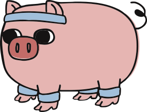

LIVRECampo Livre mostra aos jogadores de ténis quais campos estão livres ou ocupados.
Ao chegar ao campo, o jogador sinaliza na app por quanto tempo pretende jogar.
Ao acederem à app, outros jogadores sabem quais campos estão ocupados e por quanto tempo.
O estado de disponibilidade dos campos é mantido pela comunidade: quanto mais utilizadores, mais preciso.
Não é preciso login, não é preciso descarregar.
Guarda o Campo Livre na tua homescreen para voltares cá com facilidade.
No iOS: Partilhar > Adicionar ao Ecrã de Início.
No Android: Menu > Adicionar ao Ecrã Principal.
Esta ferramenta foi feita pelos jogadores para os jogadores.
Nenhum jogador é responsabilizado por eventuais conflitos de informação.
CONTACTO:
mail@campolivre.app